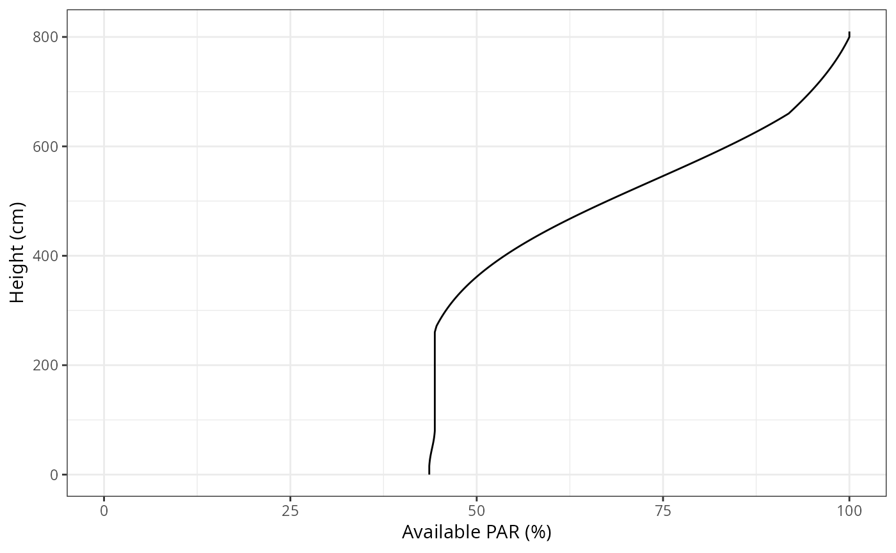
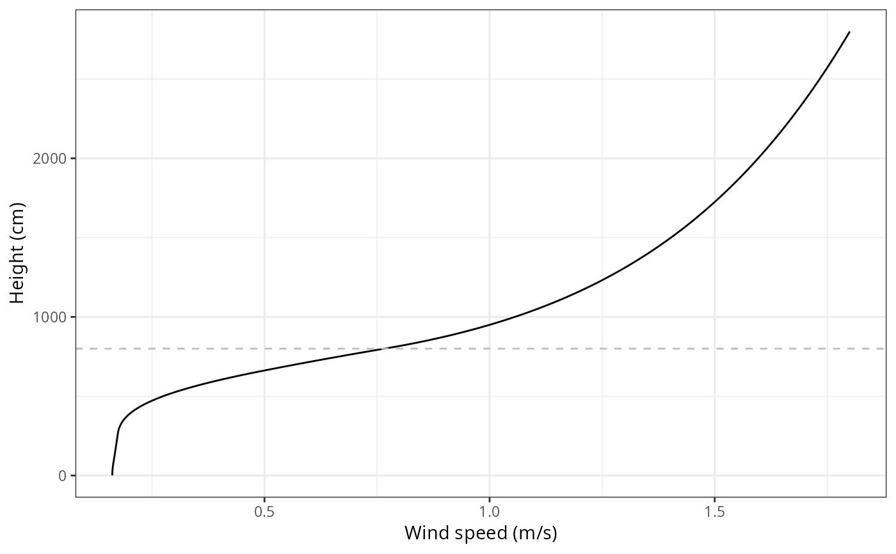
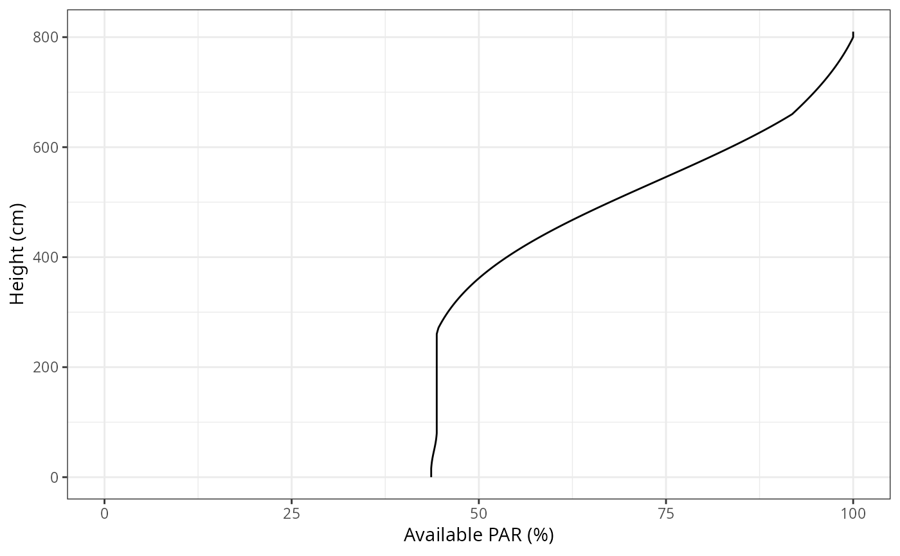
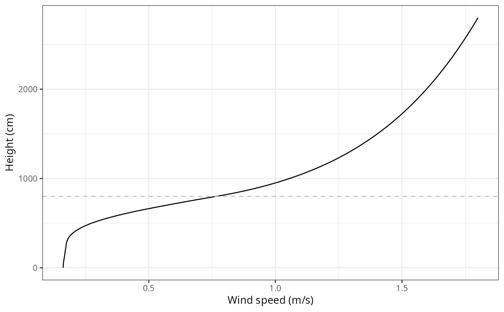

Functions to generate vertical profiles generated by an input forest object.
Usage
vprofile_leafAreaDensity(
x,
SpParams = NULL,
z = NULL,
gdd = NA,
byCohorts = FALSE,
bySpecies = FALSE,
includeHerbs = FALSE,
draw = TRUE,
xlim = NULL
)
vprofile_rootDistribution(
x,
SpParams,
d = NULL,
bySpecies = FALSE,
draw = TRUE,
xlim = NULL
)
vprofile_fuelBulkDensity(
x,
SpParams,
z = NULL,
gdd = NA,
draw = TRUE,
xlim = NULL
)
vprofile_PARExtinction(
x,
SpParams,
z = NULL,
gdd = NA,
includeHerbs = FALSE,
draw = TRUE,
xlim = c(0, 100)
)
vprofile_SWRExtinction(
x,
SpParams,
z = NULL,
gdd = NA,
includeHerbs = FALSE,
draw = TRUE,
xlim = c(0, 100)
)
vprofile_windExtinction(
x,
SpParams,
u = 1,
windMeasurementHeight = 200,
boundaryLayerSize = 2000,
target = "windspeed",
z = NULL,
gdd = NA,
includeHerbs = FALSE,
draw = TRUE,
xlim = NULL
)Arguments
- x
An object of class
forest- SpParams
A data frame with species parameters (see
SpParamsMED).- z
A numeric vector with height values.
- gdd
Growth degree days.
- byCohorts
Separate profiles for each cohort.
- bySpecies
Aggregate cohort profiles by species.
- includeHerbs
Include herbaceous layer in the profile.
- draw
Logical flag to indicate that a plot is desired.
- xlim
Limits of the x-axis.
- d
A numeric vector with soil layer widths.
- u
The value of measured wind speed (in m/s).
- windMeasurementHeight
Height corresponding to wind measurement (in cm over the canopy).
- boundaryLayerSize
Size of the boundary layer (in cm) over the canopy.
- target
Wind property to draw, either "windspeed", "kineticenergy" (turbulent kinetic energy) or "stress" (Reynold's stress).
Value
If draw = FALSE, the functions return a numeric vector with values measured at each height. Units depend on the profile function:
vprofile_leafAreaDensity: Cumulative LAI (m2/m2) per height bin.vprofile_fuelBulkDensity: Fuel bulk density (kg/m3) per height bin.vprofile_PARExtinction: Percent of photosynthetically active radiation (%) corresponding to each height.vprofile_SWRExtinction: Percent of shortwave radiation (%) corresponding to each height.vprofile_windExtinction: Wind speed (m/s) corresponding to each height.
If draw = TRUE the functions return a ggplot object, instead.
Examples
#Default species parameterization
data(SpParamsMED)
#Load example plot plant data
data(exampleforest)
vprofile_leafAreaDensity(exampleforest, SpParamsMED)
 vprofile_fuelBulkDensity(exampleforest, SpParamsMED)
vprofile_PARExtinction(exampleforest, SpParamsMED)

vprofile_SWRExtinction(exampleforest, SpParamsMED)
vprofile_windExtinction(exampleforest, SpParamsMED)

vprofile_fuelBulkDensity(exampleforest, SpParamsMED)
vprofile_PARExtinction(exampleforest, SpParamsMED)

vprofile_SWRExtinction(exampleforest, SpParamsMED)
vprofile_windExtinction(exampleforest, SpParamsMED)
